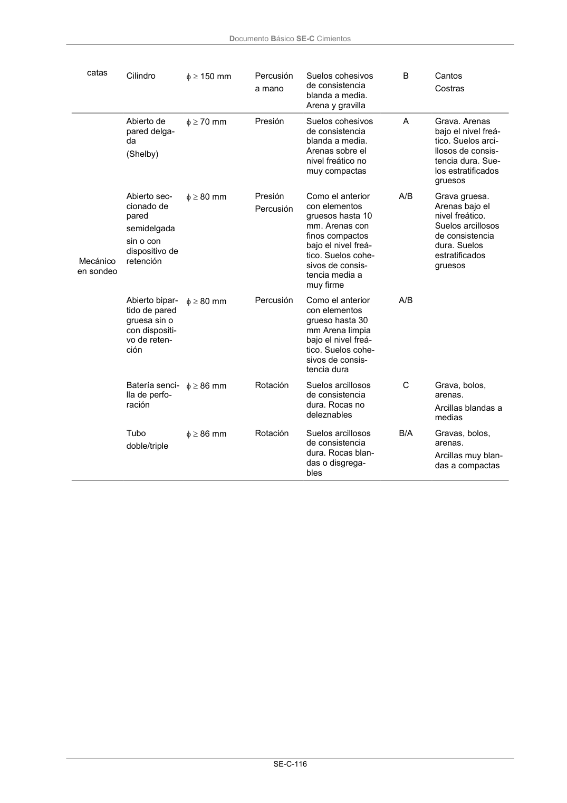

DB-SE-C Cimientos · edición 2019-12-20 · capa oficial
Documento DB-SE-C-oficial · SHA-256 del PDF a71133f4b0dca253e45ea3071c70f2a512354bcc5cd841bf89b1a502f567ac5e
Página física 121 de 165.
Copia fiel del PDF fuente · Fuente oficial
Ficha de la disposición en la fuente oficial
Formato: Texto de la página (Markdown)
Documento Básico SE-C Cimientos SE-C-116 catas Cilindro 150 mm Percusión a mano Suelos cohesivos de consistencia blanda a media. Arena y gravilla B Cantos Costras Mecánico en sondeo Abierto de pared delga- da (Shelby) 70 mm Presión Suelos cohesivos de consistencia blanda a media. Arenas sobre el nivel freático no muy compactas A Grava. Arenas bajo el nivel freá- tico. Suelos arci- llosos de consis- tencia dura. Sue- los estratificados gruesos Abierto sec- cionado de pared semidelgada sin o con dispositivo de retención 80 mm Presión Percusión Como el anterior con elementos gruesos hasta 10 mm. Arenas con finos compactos bajo el nivel freá- tico. Suelos cohe- sivos de consis- tencia media a muy firme A/B Grava gruesa. Arenas bajo el nivel freático. Suelos arcillosos de consistencia dura. Suelos estratificados gruesos Abierto bipar- tido de pared gruesa sin o con dispositi- vo de reten- ción 80 mm Percusión Como el anterior con elementos grueso hasta 30 mm Arena limpia bajo el nivel freá- tico. Suelos cohe- sivos de consis- tencia dura A/B Batería senci- lla de perfo- ración 86 mm Rotación Suelos arcillosos de consistencia dura. Rocas no deleznables C Grava, bolos, arenas. Arcillas blandas a medias Tubo doble/triple 86 mm Rotación Suelos arcillosos de consistencia dura. Rocas blan- das o disgrega- bles B/A Gravas, bolos, arenas. Arcillas muy blan- das a compactas
